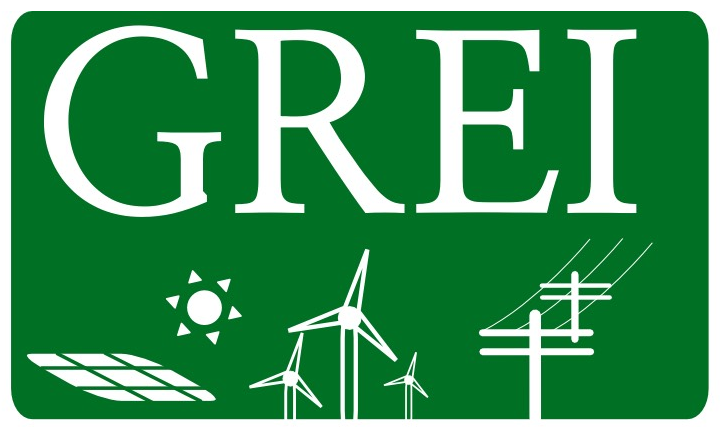

Graduado em Engenharia Elétrica pela Universidade Federal do Ceará (2013), mestrado em Engenharia Elétrica pela Universidade Federal do Ceará (2015). Membro do Grupo de Redes Elétricas Inteligentes da UFC (GREI-UFC). Atualmente é Professor Assistente do Departamento de Engenharia Elétrica da Universidade Federal do Ceará. Atua em pesquisa nas áreas de Sistemas de Energia, Redes Elétricas Inteligentes, Automação da Rede Elétrica de Distribuição de Energia Elétrica, Agentes Computacionais aplicados a sistemas de energia, Protocolos de Comunicação em Automação de Subestações de Energia Elétrica: IEC 61850, Sistemas Distribuídos, Aplicação de Inteligência Computacional em Sistemas de Energia.